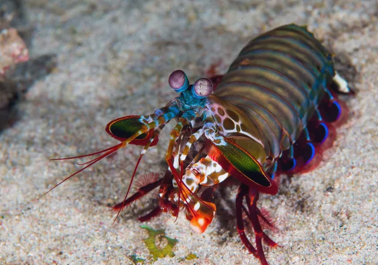

Stomatopoda facts
Description
The mantis shrimp is not a shrimp, and except for the fact that it's an arthropod, it's not related to the praying mantis, either. Instead, mantis shrimps are 500 different species belonging to the order Stomatopoda. To distinguish them from true shrimp, mantis shrimps are sometimes called stomatopods.
Mantis shrimps are known for their powerful claws, which they use to bludgeon or stab their prey. In addition to their fierce hunting method, mantis shrimps are also known for their extraordinary sense of sight.
| Odontodactylus scyllarus | ||||
| Kingdom | Phylum | Subphylum | Class | Order |
| Animalia | Arthropoda | Crustacea | Malacostraca | Stomatopoda |
Vision
Stomatopods have the most complex vision in the animal kingdom, even exceeding that of butterflies. The mantis shrimp has compound eyes mounted on stalks, and can swivel them independently of one another to survey its surroundings. While humans have three types of photoreceptors, a mantis shrimp's eyes have between 12 and 16 types of photoreceptor cells. Some species can even tune the sensitivity of their color vision.
The cluster of photoreceptors, called ommatidia, are arranged in parallel rows into three regions. This gives each eye depth perception and trinocular vision. Mantis shrimps can perceive wavelengths from deep ultraviolet through the visible spectrum and into far red. They can also see polarized light. Some species can perceive circularly polarized light—an ability not found in any other animal species. Their exceptional vision gives the mantis shrimp a survival advantage in an environment that can range from bright to murky and allows them to see and gauge distance to shimmering or translucent objects.

Behavior
Mantis shrimps are highly intelligent. They recognize and remember other individuals by sight and smell, and they demonstrate an ability to learn. The animals have a complex social behavior, which includes ritualized fighting and coordinated activities between members of a monogamous pair. They use fluorescent patterns to signal each other and possibly other species.
Predators
As zooplankton, newly hatched and juvenile mantis shrimp are eaten by a variety of animals, including jellyfish, fish, and baleen whales. As adults, stomatopods have few predators.
Several species of mantis shrimp are eaten as seafood. Their meat is closer in flavor to lobster than shrimp. In many places, eating them carries the usual risks associated with eating seafood from contaminated waters.